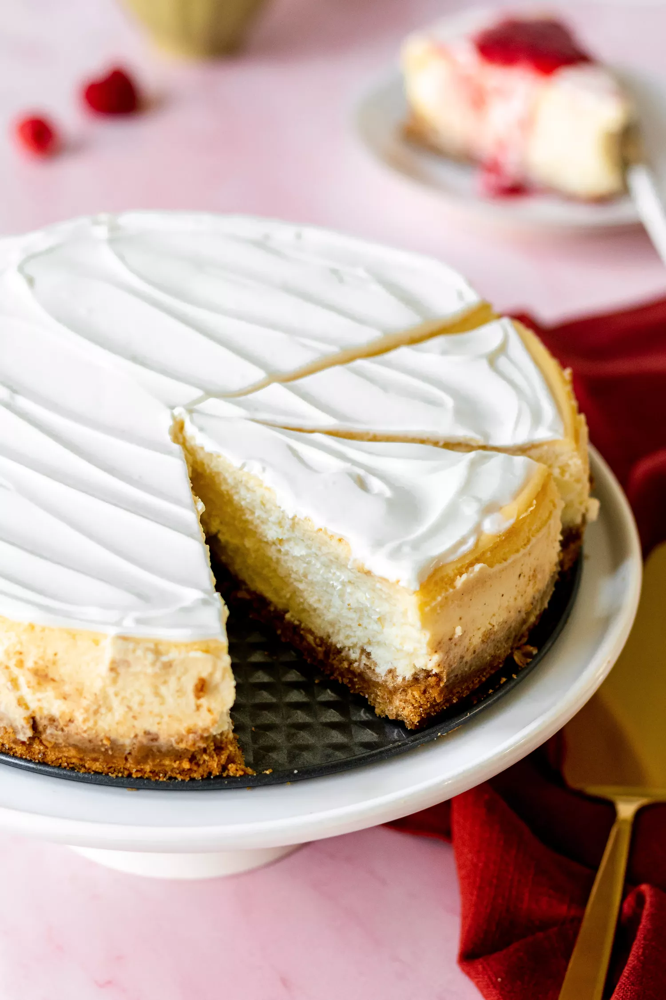

Cheesecake

Ingredients
Crust:
- 1 ¾ cups (230g) Graham cracker crumbs (from about 15 Graham crackers)
- 2 Tbsp sugar
- Pinch salt
- 4 Tbsp plus 1 tsp (60g) unsalted butter (if using salted butter, omit the pinch of salt), melted
Filling:
- 2 pounds (900g) cream cheese, at room temperature (4 packets)
- 1 ⅓ cups (270g) sugar
- Pinch salt
- 2 tsp vanilla extract
- 4 large eggs, at room temperature
- ⅔ cup (160ml) sour cream, at room temperature
- ⅔ cup (160ml) heavy cream
Topping:
- 2 cups (475ml) sour cream
- ⅓ cup (35g) powdered sugar
- 1 tsp vanilla extract
Instructions
Prepare the crust:
- Arrange a rack in the lower third of the oven and preheat to 350°F (175°C).
- Pulse the graham crackers in a food processor or blender until finely ground. Put in a large bowl, and stir in the sugar and salt. Stir in the melted butter.
- Use a 9x2 3/4-inch round springform pan. Gently press down on the crumbs using your fingers, until the crumbs are a nice even layer at the bottom of the pan, with maybe just a slight rise along the inside edges of the pan.
- Place the pan on a baking sheet and bake at 350°F (175°C) for 10 minutes. Remove from the oven and let cool. While the crust is cooling, you can skip ahead and start on the filling. Wait until the crust has cooled to wrap the pan in foil in the next step.
- Lower the oven temperature to 325°F (160°C).
- Prepare the springform pan, so no water leaks into it while cooking. Place a large 18-inch by 18-inch square of heavy duty aluminum foil on a flat surface. Place the springform pan in the middle of the foil. Gently fold up the sides of the foil around the pan. Make sure to do this gently, so you don't create any holes in the foil. If there are any holes, water will get into the pan and ruin the crust. Press the foil around the edges of the pan. Place a second large square of foil underneath the pan, and repeat, gently folding up the sides of the foil around the pan and pressing the foil against the pan. To be triply safe, repeat with a third layer of heavy duty foil. Gently crimp the top of the foil sheets around the top edge of the pan.
Make the cheesecake:
- Cut the cream cheese into chunks and place in the bowl of an electric mixer fitted with the paddle attachment. Mix on medium speed for 4 minutes until smooth, soft and creamy. Add the sugar and beat for 4 minutes more.
- Add the salt and vanilla, mixing just until incorporated. Add the eggs, one at a time, mixing on low speed for 30 seconds after each addition. Remember to scrape down the sides of the bowl, and scrape up any thicker bits of cream cheese that have stuck to the bottom of the mixer that paddle attachment has failed to incorporate. Add the sour cream and mix on medium speed until incorporated.
- Add the heavy cream and mix on low speed until incorporated.
- Place the foil-wrapped springform pan in a large, high-sided roasting pan. Prepare 2 quarts of boiling water.
- Pour the cream cheese filling into the springform pan, over the graham cracker bottom layer. Smooth the top with a rubber spatula.
- Place the roasting pan with the springform pan in it into the oven on the lower rack.
- Carefully pour the hot water into the roasting pan to create a water bath for the cheesecake, pouring until the water reaches halfway up the side of the springform pan, about 1 1/4 inches. (Alternatively, you can add the water before putting the pan in the oven, whichever is easier for you.)
- Bake at 325°F (160°C) for 1 ½ hours.
- Turn the oven off and crack open the oven door 1 inch. Let the cheesecake cool in the oven, as the oven cools for another hour. This gentle cooling will help prevent the cheesecake surface from cracking.
- Carefully cover the top of the cheesecake with foil, so it doesn't actually touch the cheesecake. Chill in the refrigerator for a minimum of 4 hours, or overnight.
Finish cheesecake:
- Place sour cream in a medium sized bowl. Add the powdered sugar and vanilla, and stir until smooth. Chill until you are ready to serve the cake.
- Remove the cheesecake from the refrigerator. Remove the foil from the sides of the pan, and place the cake on your cake serving dish. Run the side of a blunt knife between the edge of the cake and the pan.
- Spread the top with the sour cream mixture. Serve plain because we are cheesecake purists and do not tolerate fruit sauce.